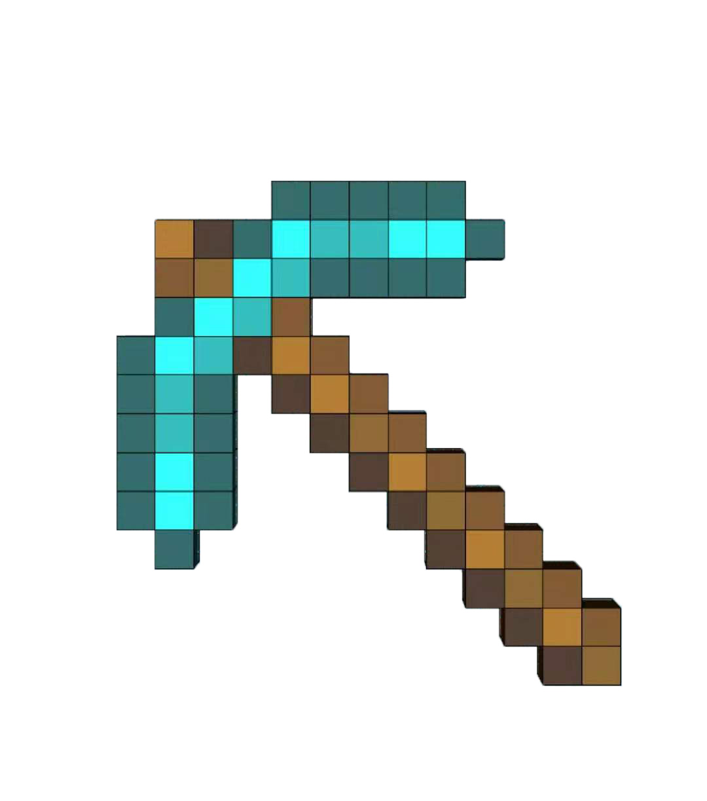

<!DOCTYPE html>
<html lang="en">

<head>
    <meta charset="UTF-8">
    <meta http-equiv="X-UA-Compatible" content="IE=edge">
    <meta name="viewport" content="width=device-width, initial-scale=1.0">
    <title>Document</title>
    <link rel="stylesheet" href="css/base.css">
    <link rel="stylesheet" href="css/commom.css">
    <script src="js/index.js"></script>
</head>

<body>
    
    <div class="w">
        <!-- 上侧标题 -->
        <div class="top">
            <!-- <h1 class="title">
                徐志恺的网页
            </h1> -->
            <!-- <div class="xbg"></div> -->
        </div>
        <!-- 中间主体 -->
        <div class="container">
            <div class="left">
                <ul class="banner">
                    <li><a href="">博客园</a></li>
                    <li><a href="">首页</a></li>
                    <li><a href="">随笔</a></li>
                    <li><a href="">联系</a></li>
                    <li><a href="">管理</a></li>
                    <li><a href="">订阅</a></li>
                    <div class="ly">
                        随笔- 9 文章- 0 评论- 7 阅读- 34441
                    </div>
                </ul>
                <div class="atc pd">
                    <h1>Journal of Food Engineering</h1>
                    <p>In this work, a deep feature mining method for electronic nose (E-nose) sensor data based on the
                        convolutional
                        neural network (CNN) was proposed in combination with a support vector machine (SVM) to identify
                        beer
                        olfactory information. According to the characteristics of E-nose sensor data, the structure and
                        parameters of the
                        CNN was designed. By means of convolution and pooling operations, the beer olfaction features
                        were extracted
                        automatically. Meanwhile, the SVM replaced the full connection layer of the CNN to enhance the
                        generalization
                        ability of the model, and two important parameters affecting the classification performance of
                        the SVM were
                        optimized based on an improved particle swarm optimization (PSO). The results indicated that the
                        CNN-SVM
                        model achieved deep feature automatic extraction of beer olfactory information, and a good
                        classification
                        performance of 96.67% was obtained in the testing set. This study shows that the CNN-SVM can be
                        used as an
                        effective tool for high precision intelligent identification of beer olfactory information.</p>
                    <h3>1. Introduction</h3>
                    <p>
                        E-nose is an intelligence instrument consisting of a sensor array and
                        pattern recognition method, which is designed to simulate the human
                        olfactory system. The sensor array acquires the olfactory information of
                        the detected object, and the pattern recognition method processes detection information and
                        gives a decision. As a new sensing technology,
                        the E-nose has been used widely in the field of food engineering. Such
                        as food classification (Ciptohadijoyo et al., 2016; Jia et al., 2016;
                        Banerjee et al., 2019), quality assessment (Majchrzak et al., 2018; Ke
                        et al., 2017; Zhu et al., 2017), freshness prediction (Chen et al., 2017;
                        Han et al., 2013; Min et al., 2018), identification authenticity (Majcher
                        et al., 2015; Śliwińska et al., 2016; Men et al., 2014) and shelf life
                        evaluation (Buratti et al., 2018; Luo et al., 2016; Dipan et al., 2014) etc.
                        Beer is one of the most productive and consumed alcoholic beverages in the world (Denke, 2000).
                        The total output and per capita
                        consumption of beer in European and North American countries are
                        among the highest worldwide. The aroma of beer affects people's sensory experience directly.
                        There are more than 100 ingredients that affect the beer aroma, mainly including alcohols,
                        esters, acids and other
                        substances. Different ingredients play different roles in beer aroma
                        (Denke, 2000; Nardini and Ghiselli, 2004; Vanbeneden et al., 2006).
                        The Beer odor ingredients are complicated, and very difficult to separate and detect. Although
                        there are clear requirements for the content
                        of additives in different brewing stages of beer, the comprehensive effects of various
                        substances will still affect the overall olfactory information. A deviation in the overall
                        olfactory information at a certain
                        brewing stage indicates that the brewing process or the material allocation ratio at this stage
                        does not meet industrial requirements, and the
                        brewing process at that stage will be effectively controlled. At present,
                        the main detection methods are chemical analysis, chromatography and
                        mass spectrometry (Castro and Ross, 2015; Jie et al., 2018). These
                        methods can only detect single substances, but do not reflect the overall
                        odor information of beer. The cross-sensitive sensor array of the E-nose
                        can detect the comprehensive odor information of beer and has the
                        advantages of easy operation and high precision.
                        There are three main steps for the E-nose to decide on the measured
                        object: data acquisition, feature mining and recognition decision.
                        Feature mining methods affect the decision result of intelligent algorithm directly. At
                        present, the features extracted from the original
                        sensor signal are mainly divided into time-domain features, frequencydomain features and
                        spatial-domain features. Time-domain features
                        include the maximum value (Men et al., 2018b., Wei et al., 2015),
                        average value (Xu et al., 2016), steady state value (Qin et al., 2014),
                        integral value (Yin et al., 2016), differential value (Yu et al., 2013), etc.
                        Frequency-domain features, including the maximum energy (Zhi et al.,017) and the average energy
                        (Men et al., 2018c) of wavelet packet
                        decomposition (Yin et al., 2014), etc. Spatial-domain features are described by a response
                        curve, which is composed of the sensitivity and
                        sensitivity change rate of sensor, including characteristic parameters
                        extracted from the response curve (Zhang et al., 2008). A single feature
                        form cannot represent the overall olfactory information of beer to a
                        certain extent. It is often necessary to fuse multiple features to characterize the overall
                        olfactory information of beer, which causes difficulty in the feature extraction process.
                        A convolutional neural network (CNN) is a feedforward neural
                        network, which includes deep structure and convolution computation.
                        The CNN is one of the representative algorithms of deep learning (Ren
                        et al., 2017). After the 21st century, with the development of deep
                        learning theory and the improvement of numerical calculation
                        methods, CNNs have been used in computer vision (Garea et al., 2018),
                        natural language processing (Hang, 2018), real-time object detection
                        (Ren et al., 2017), etc. In contrast to time-domain features, frequencydomain features and
                        space-domain features, the input data feature can
                        be extracted automatically by means of the convolution layer and
                        pooling layer in the structure of the CNN without pretreatment and
                        statistical analysis. Meanwhile, the CNN can freely transform the form
                        of input data, set up a reasonable convolution structure to automatically extract the features,
                        and send them to the classifier for pattern
                        recognition directly. Most importantly, the CNN achieves integration of
                        the feature extraction and recognition processes. Although CNN has
                        many advantages, its training process is similar to that of the traditional
                        BP neural network, which requires a large amount of training data and
                        has the problem of overfitting. However, a large sample data acquisition is not allowed in the
                        process of industrial detection. According to
                        the principle of structural risk minimization, the support vector machine (SVM) has good
                        pattern recognition ability for small sample sizes
                        of data (Liu et al., 2012; Wu et al., 2018). Therefore, this paper combines a CNN and a SVM to
                        automate extraction and recognition of beer
                        olfactory features.
                        In this paper, in order to propose an effective deep feature mining
                        method, and provide a useful way of analyzing for beer olfactory information, the CNN-SVM is
                        applied to identify beer olfactory information in the field of food engineering. Five different
                        beers with similar
                        alcohol content, wort concentration and raw materials were used as
                        experimental samples. According to the characteristics of E-nose sensor
                        data, the structure and parameters of the CNN were designed. The
                        convolution and pooling operations were applied to achieve the deep
                        extraction of original olfactory data. Meanwhile, in the process of SVM
                        classification, the penalty factor c and kernel function parameter g affect the classification
                        performance. Therefore, an improved particle
                        swarm optimization (PSO) method was proposed to optimize the two
                        important parameters. The design process and recognition results of the
                        CNN-SVM are discussed in detail.
                    </p>
                    <h3>2. Materials and methods</h3>
                    <p>
                        2.1. Samples preparation
                        In this work, five different beers with similar alcohol content, wort
                        concentration and raw materials were used as experimental samples.
                        Table 1 shows the detailed parameters of the five different beers. To
                        ensure the homogeneity of samples, each beer was produced in the
                        same batch and at the same origin.
                        2.2. Electronic nose and experiment
                        A PEN3 E-nose, developed by the Airsense Analytics Inc.(Schwerin,
                        Germany), was employed to collect beer olfactory information. PEN3
                        mainly includes a sensor array, cleaning and sampling channels, and a
                        signal collecting system. Fig. 1 shows the PEN3 schematic diagram.
                        There are 10 metal oxide sensors in the PEN3 sensor array chamber.
                        Table 2 shows the sensitivity characteristics of each sensor. The sensor
                        response value of PEN3 is the ratio of the conductivity G of the sensor
                        after contact with the sample volatile gas to the conductivity G0 of the
                        sensor in contact with the standard gas filtered by activated carbon. The
                        interaction between sensor and gas will produce a redox reaction,
                        which changes the conductivity of sensor active materials, then changes
                        the conductivity G/G0, and finally realizes the detection of cross-sensitive odor information.
                        The experimental environment temperature of the E-nose was
                        20 ± 0.5 °C, and the humidity was 65 ± 2% RH. The experimental
                        steps were as follows:
                        (1) 5 ml beer was placed in a 50 ml sampler for 10 min to ensure that
                        the gas was saturated at the top of the sealed bottle.
                        (2) Before testing began, the sensor chamber was cleaned and calibrated. Clean air was filtered
                        by activated carbon, and entered the
                        sensor array chamber for 60 s, with a flow rate of 300 mL/min.
                        (3) The detection started after the calibration was finished. The detection time of each sample
                        was 100 s. Fig. 2 shows the sensor response output curve.
                        (4) Steps (1)–(3) was repeated, without loss of generality for 18 parallel
                        samples of each beer. Ninety samples of data were obtained for five
                        beers.
                        Each sample of data represented the overall olfactory information of
                        beer.
                        2.3. CNN model
                        The CNN is a typical feedforward neural network, which is composed of an input layer, hidden
                        layer and output layer. The hidden layer
                        consists of convolution layer, pooling layer and fully connected layer.
                        Convolution simulates the response of individual neurons to visual
                        stimuli. It uses the convolution layer to convolute input data, and then
                        transfers the results to the next layer.
                        The convolution layer is made up of a set of convolution kernels.
                        Although these kernels have smaller perceptual horizons, the kernels
                        extend to the full depth of the input data. The function of convolution
                        operation is to extract the deep features of input data. For example, a
                        single-layer convolution network can only extract surface features such
                        as center and edge, while a multilayer convolution network will extract
                        more deeper features.
                        The mathematical definition of convolution is where the dimension of input matrix X is (P, Q),
                        and the kernel matrix Y
                        is (M, N). Fig. 3 shows the convolution mapping process. The convolution kernel calculates the
                        data covered by moving the weight
                        template on the input matrix. The output of the convolution layer
                        usually needs to use the activation function for nonlinear mapping. This
                        paper chose the rectified linear units (ReLU) activation function
                        (Krizhevsky et al., 2012).
                        The pooling layer performs a downsampling operation on the convolution output. Pooling can
                        reduce the dimension of the output, and
                        retain significant features. The commonly used pooling methods are
                        maximum pooling, average pooling and random pooling. In this paper,
                        the average pooling method is used for the downsampling operation.
                        Fig. 4 shows the average pooling process. Taking the ‘A’ region as an
                        example, the average pooling operation sums all elements in ‘A’ region,
                        then divides the number of elements in the region to get an average and
                        passes it to ‘a’.
                        The full connection layer is the “classifier” of the CNN. Each node in
                        the full connection layer is connected with all the nodes in the upper
                        layer. Meanwhile, the full connection layer integrates the features after
                        the convolution and pooling operations, and maps the final feature
                        information to the decision space.
                        2.4. SVM model
                        As a supervised learning algorithm, SVM can analyze data and the
                        classification decision. SVM was proposed by Cortes and Vapnik et al.
                        (Cortes and Vapnik, 1995) based on the statistical theory. Based on the
                        principle of structural risk minimization, SVM has many advantages for
                        pattern recognition problems, such as small sample requirements,
                        nonlinearity and high-dimensional feature spaces, etc. In the process of pattern recognition,
                        SVM maps low-dimensional data to high-dimensional space by means of a kernel function. Previous
                        studies have shown
                        that the RBF kernel function expressed a good classification performance (Li et al., 2017; Qiu
                        et al., 2015). Therefore, the RBF was used as
                        a kernel function for the SVM to map low-dimensional data.
                        The procedure of the SVM algorithm is as follows:
                        Set the data set
                        space.
                        The general form of the decision function is (Men et al., 2018a): (2)
                        where is the weight vector, b is the domain value and
                        k x( )
                        is a nonlinear mapping function. To minimize structural risk, the optimal
                        classification plane can classify all samples correctly. The following
                        conditions should be satisfied:
                        (3)
                        To achieve a certain balance between experiential risk and generalization performance, the
                        existence of misclassified samples is allowed by introducing nonnegative slack variable i
                        . Therefore, the optimization problem is converted to:

                        Therefore, the optimization problem is converted to dual form:

                        (9)
                        In this paper, RBF kernels can be expressed as:
                        where g is the kernel function parameter. It controls the radial action
                        range of the function. Therefore, the above optimization problem is
                        converted to:

                        As seen from formula (11), the parameters c and g affect the classification performance for the
                        SVM. Therefore, PSO was introduced to
                        calculate the parameters.
                        PSO is an optimization algorithm based on swarm intelligence in the
                        field of computational science. Its basic concept originates from the
                        study of bird predation behavior (Fong et al., 2016; Messerschmidt and
                        Engelbrecht, 2004). In the process of iterative optimization, the particles keep track of each
                        other's historical optimum accuracy and constantly update their search direction and speed, so
                        that the particles
                        converge toward the optimum direction.
                        The speed update formulae of traditional PSO algorithm are as
                        follows:

                        1 best 2 best
                        (12)
                        where v(t) is the velocity of particle at time t, is the inertia weight,
                        qbest(t) is the optimal solution of particle at time t, q(t) is the solution of
                        particle at time t, pbest(t) is the global optimal solution for all particles at
                        time t, rand () is a random number in the range [0, 1], and c1 and c2 are
                        learning factors.
                        In the traditional PSO algorithm, the describes the influence of
                        the particle's previous generation velocity to the current generation
                        velocity. The larger the search range of particles is, the better the algorithm can find global
                        optimization and avoid falling into local optimal solutions. The smaller the search range of
                        particles, the smaller
                        the search range will be, which will enhance the local search ability and
                        make the algorithm converge more quickly. In this paper, the balance
                        between global search and local optimal ability was adjusted. The
                        formula for calculating the can be defined as follow: = N max ·N max min
                        max (13)
                        where max is the maximum inertia weight, which is 0.9, min is the
                        minimum inertia weight, which is 0.3, Nmax is the maximum iteration
                        algebra and N is the current iteration algebra. Formula (13) shows that
                        the value is the largest at the beginning of the iteration, which enables the particles to
                        search globally in a wide range. As the number of
                        iterations increases, the particle gradually approaches the global optimal solution. Meanwhile,
                        the value decreases, which enables the
                        particle to search locally in a small range and ultimately achieve the
                        global optimal solution. The fitness of inertia weight varies with the
                        number of iterations, so it is called adaptive inertia weight.
                        c1 reflects the information exchange between individual particles,
                        and c2 reflects the information exchange between the particle population and the historical
                        optimal trajectory. This paper introduced the
                        asynchronous learning formula to dynamically adjust c1 and c2. The
                        adjusted formulae can be defined as follows:

                        (14)
                        where c1max is the maximum of c1 learning factor, and its value is 2,
                        c1min is the minimum of c1 learning factor, and its value is 1, c2max is the
                        maximum of c2 learning factor, and its value is 2, and c2min is the
                        minimum of c2 learning factor, and its value is 1.
                        It can be seen from Formula (14), with the increase of iterations, the
                        learning factor c1 value is the largest at the beginning of the iteration
                        and then decreases, while the c2 value is the smallest at the beginning of
                        the iteration and then increases. In this way, using the asynchronous
                        learning characteristics can exchange information between particles
                        effectively (Zhao and Fang, 2013).
                        To control the flying speed of particles effectively, the algorithm
                        achieved an effective balance between global detection and local
                        mining. In this paper, the compression factor was introduced and the
                        formula can be defined as follow:

                        Finally, the adaptive particle swarm optimization algorithm with
                        compression factor and asynchronous learning factor was proposed
                        (CAAPSO). The particle velocity position updated formula can be defined as follows:

                        (16)
                    </p>
                    <h3> 3. Results and discussion</h3>
                    <p>3.1. Data analysis
                        A radar plot was used to illustrate the relationships and trends of
                        sensors response data. To visualize the data, one sample was randomly
                        selected from the five different beer samples. Fig. 5 shows the radar plot
                        of sensors 90 s for five different beers. The radar response forms of five
                        beers were similar, which may mean that the distinction was difficult.
                        While the W5S, W1S, W1W, W2S, W2W, W3S responses were larger,
                        the W1C, W3C, W6S, W5C responses were smaller. However, for beer
                        identification, we are not sure whether a large response sensor is highly
                        important, or a small response sensor is less important (Men et al.,
                        2018a). Therefore, it is particularly important to deeply mine the important features within
                        the sensor data.
                        3.2. CNN structure
                        The matrix form of the beer olfactory information was 100*10,
                        where 100 was the number of sampling points for each sensor and 10
                        was the number of sensors. In this paper, the first 90 sampling points
                        were selected for each sensor, and the sample matrix became 90*10,
                        which was converted to 30*30 as the input of the CNN.
                        Fig. 6 shows the structure schematic diagram of the CNN. The
                        structure of the CNN consisted of 4 convolution layers, 3 pooling layers
                        and 2 full connection layers. After the last pooling operation, all feature
                        matrices were connected into a vector as input to the first full connection layer. Table 3
                        shows the network parameters of the CNN. In all
                        convolution operations, the convolution kernel size was 3*3, the stride
                        was 1 and ReLU was selected as activation function. Padding was
                        ‘same’, which meant that 0 was added to the periphery of matrix data to
                        preserve and extract edge features. In contrast, ‘valid’ did not add the
                        padding. In all downsampling operations, the stride was 2 and the filter
                        was 2*2. In the first full connection operation, ReLU was selected as the
                        activation function, and the number of neurons was 32 according to the
                        number of the pooling3 feature metrics. In the second full connection
                        operation, Sigmoid was selected as activation function, and the number
                        of neurons was 5 according to the number of categories. The design
                        process of each layer was as follows:
                        (1) The original E-nose data input matrix was 90*10, which was converted into 30*30. In
                        principle, more features can be acquired by
                        means of convolution kernels, but too many features can lead to
                        overfitting of the recognition model. Therefore, 4 convolution
                        kernels were set to convolve the original data after adding padding
                        items. Here, 4 feature matrices were obtained in the same form, and
                        the matrix size of each feature was still 30*30.
                        (2) Eight convolution kernels were set to convolute the input matrices.
                        Here, 8 feature matrices were obtained in the same form, and each
                        feature matrix size was changed to 28*28.
                        (3) The data were compressed by means of pooling operation. In this
                        paper, the global average pooling operation was applied. Here, the
                        number of feature matrices remained constant, and each feature
                        matrix size was changed to 14*14.
                        (4) According to the parameters in Table 3, the calculation process of
                        No.4-No.7 were the same as that of (2)–(3). Finally, 32 feature
                        matrices were obtained in the same form, and each feature matrix
                        size was changed to 2*2.
                        (5) Before the full connection operation, it converted 32 feature matrices with sizes of 2*2
                        into a feature matrix as the input to the first
                        full connection layer.
                        3.3. CNN performance evaluation
                        The original 90 groups of beer data were divided into two groups
                        randomly: 2/3 were used to train the CNN as training set (containing
                        validation sets), and 1/3 were used as the testing set. Data were processed based on section
                        3.2 CNN structure.
                        The batch training mode was applied to train CNN. The initialization batch size was 20 based on
                        the smaller beer samples. The BP algorithm was used to train the CNN by means of the gradient
                        descent
                        algorithm. In the iteration process of weights and biases, only the
                        learning rate needs to be set, which was set to 0.1. Xavier was applied to
                        make the information flow better in the network. The variance in the
                        output of each layer should be as equal as possible (Xavier and Yoshua,
                        2010). The connection weights between adjacent network layers and
                        the weight matrix of the convolution kernels were initialized according
                        to the following uniform distribution the validation set changed less than 10−3 after 480
                        iterations. Meanwhile, the overall MSE value of the validation set was significantly
                        higher than that of the training set, which indicated that even under the
                        five-fold cross-validation, the training process of CNN was fitted. Finally, the training
                        accuracy was 80%, and the validation accuracy was
                        70.77%. Clearly, such training effects cannot meet the actual application requirements.
                        3.4. CNN-SVM results
                        Fig. 8 shows the implementation process of the CNN-SVM. After
                        CNN training is completed, the features of training set samples will be
                        extracted automatically. The features were sent to CAAPSO-SVM for
                        training. In the initialization process of CAAPSO, the number of particles was 30, the number
                        of iterations was 100 and each particle had the
                        same velocity. The fitness function had the highest accuracy under 5-
                        fold cross-validation of training set. When the accuracy rate reached a
                        maximum and no longer increased, c and g were selected as the best
                        parameter. In this paper, c and g were selected in the range of (0, 1000).
                        In the testing phase, the trained SVM model replaced the full connection layer of the CNN.
                        Meanwhile, the testing set samples were input to
                        the trained CNN (only the convolution layer and downsampling layer
                        were left at this time), to obtain the corresponding eigenvectors of each
                        testing set sample. The eigenvectors of the test samples were input into
                        the trained SVM model for pattern recognition. Fig. 9 (a) shows the
                        parameter optimization process with CAAPSO. The highest 5-fold crossvalidation accuracy was
                        98.3333%, the optimal parameter c was
                        7.3589 and g was 0.01. Fig. 9 (b) shows the classification results. One of
                        the fifth beers was misclassified into the fourth category, the final
                        classification accuracy was 96.67%.
                        4. Conclusions
                        In this study, a deep feature mining method was proposed to extract
                        the sensors data of E-nose. Meanwhile, the feature extraction and pattern recognition process
                        of E-nose sensor data were integrated. The
                        main conclusions are as follows:
                        (1) A new structure of CNN was designed which included 4 convolution
                        layers, 3 pooling layers and 2 full connection layers. By setting the
                        CNN input form, convolution kernels, convolution stride, activation
                        function and other parameters, the features of E-nose sensor data
                        can be extracted automatically.
                        (2) From the training process of the CNN, it can be seen that the model
                        was overfitted, and the overall MSE value of the validation set was
                        higher than that of the training set. The classification accuracy of
                        the validation set was 70.77%, which is obviously not in line with
                        the actual application requirements. Therefore, SVM replaced the
                        full connection layer of the CNN to enhance the pattern recognition
                        ability.
                        (3) The adaptive PSO algorithm with compression factor and asynchronous learning factor was
                        proposed to avoid the shortcomings of
                        particles prematurity and local optima due to unreasonable parameter setting. Based on CAAPSO,
                        two important parameters
                        affecting the classification performance of SVM were optimized.
                        Finally, the highest classification accuracy of the validation set was
                        98.33%, and the recognition result of CNN-SVM was 96.67%.
                        This study shows that CNN can extract beer E-nose sensor features
                        effectively. SVM based on an improved PSO enhanced the classification
                        performance of the CNN. It can reduce the detection difficulty and
                        improve the detection efficiency with as little sample data as possible,
                        and obtain a better qualitative analysis result. Moreover, it also provided a new and effective
                        method for beer quality con</p>
                    <h3>Acknowledge</h3>
                    <p>This work was supported by the National Natural Science
                        Foundation of China [31772059, 31871882]; the Key Science and
                        Technology Project of Jilin Province [20170204004SF]; and the
                        Provincial Special Funds for Industrial Innovation of Jilin Province
                        [2018C034-8]</p>
                    <h3>Appendix A. Supplementary data</h3>
                    <p>Supplementary data to this article can be found online at https://
                        doi.org/10.1016/j.jfoodeng.2019.07.023.</p>
                    <h3>References</h3>
                    <p>Banerjee, M.B., Runu, B.R., Bipan, T., Rajib, B., Nabarun, B., 2019. Black tea classification
                        employing feature fusion of E-Nose and E-Tongue responses. J. Food Eng. 24, 55–63.
                        https://doi.org/10.13982/j.mfst.1673-9078.2016.2.035.
                        Buratti, S., Malegori, C., Benedetti, S., Oliveri, P., Giovanelli, G., 2018. E-nose, e-tongue
                        and e-eye for edible olive oil characterisation and shelf life assessment: a powerful
                        data fusion approach. Talanta 182, 131–141. https://doi.org/10.1016/j.talanta.
                        2018.01.096.
                        Castro, L.F., Ross, C.F., 2015. Determination of flavour compounds in beer using stir-bar
                        sorptive extraction and solid-phase microextraction. J. Inst. Brew. 121 (2), 197–203.
                        https://doi.org/10.1002/jib.219.
                        Chen, H.Z., Min, Z., Bhandari, B., Guo, Z., 2017. Evaluation of the freshness of fresh-cut
                        green bell pepper ( Capsicum annuum var. grossum ) using electronic nose. LWT -
                        Food Sci. Technol. (Lebensmittel-Wissenschaft -Technol.) 87, 77–84. https://doi.org/
                        10.1016/j.lwt.2017.08.052.
                        Ciptohadijoyo, S., Litananda, W.S., Rivai, M., Purnomo, M.H., 2016. Electronic nose
                        based on partition column integrated with gas sensor for fruit identification and
                        classification. Comput. Electron. Agric. 121, 429–435. https://doi.org/10.1016/j.
                        compag.2015.11.013.
                        Cortes, C., Vapnik, V., 1995. Support vector network. Mach. Learn. 20 (3), 273–297.
                        https://doi.org/10.1023/A:1022627411411.
                        Denke, M.A., 2000. Nutritional and health benefits of beer. Am. J. Med. Sci. 320 (5),
                        320–326. https://doi.org/10.1097/00000441-200011000-00004.
                        Dipan, C., Paramita, B., Nabarun, B., 2014. Development of methodology for assessment
                        of shelf-life of fried potato wedges using electronic noses: sensor screening by fuzzy
                        logic analysis. J. Food Eng. 133, 23–29. https://doi.org/10.1016/j.jfoodeng.2014.02.
                        009.
                        Fong, S., Wong, R., Vasilakos, A.V., 2016. Accelerated PSO swarm search feature selection
                        for data stream mining big data. IEEE Trans. Ser. Comput. 9 (1), 33–45. https://doi.
                        org/10.1109/tsc.2015.2439695.
                        Garea, A.S., Heras, D.B., Argüello, F., 2018. Caffe CNN-based classification of hyperspectral
                        images on GPU. J. Supercomput. (3), 1–13. https://doi.org/10.1007/
                        s11227-018-2300-2.
                        Han, F., Huang, X., Teye, E., Gu, F., Gu, H., 2013. Nondestructive detection of fish
                        freshness during its preservation by combining electronic nose and electronic tongue
                        techniques in conjunction with chemometric analysis. Anal. Methods 6 (2), 529–536.
                        https://doi.org/10.1039/C3AY41579A.
                        Hang, L., 2018. Deep learning for natural language processing:advantages and challenges.
                        Natl. Sci. Rev. 5 (1), 24–26. https://doi.org/10.1093/nsr/nwx110.
                        Jia, X.M., Meng, Q.H., Jing, Y.Q., Qi, P.F., Zeng, M., Ma, S.G., 2016. A new method
                        combining KECA-LDA with ELM for classification of Chinese liquors using electronic
                        nose. IEEE Sens. J. 16 (22), 8010–8017. https://doi.org/10.1109/jsen.2016.
                        2606163.
                        Jie, G., Chen, D., Zhao, Y., 2018. Determination of carbendazim and thiabendazole in
                        wine and beer by ultra high performance liquid chromatography high resolution mass
                        spectrometry coupled with dispersive micro solid-phase extraction. Chin. J.
                        Chromatogr. 36 (2), 143–149. https://doi.org/10.3724/SP.J.1123.2017.10018.
                        Ke, X., Jun, W., Zhen, Wei, Fan, D., Yong, W., Shao, C., 2017. An optimization of the MOS
                        electronic nose sensor array for the detection of Chinese pecan quality. J. Food Eng.
                        203, 25–31. https://doi.org/10.1016/j.jfoodeng.2017.01.023.
                        Krizhevsky, A., Sutskever, I., Hinton, G.E., 2012. Imagenet classification with deep
                        convolutional neural networks. Adv. Neural Inf. Process. Syst. 25 (2), 1097–1105.
                        https://doi.org/10.1145/3065386.
                        Li, Y., Zhang, J., Li, T., Liu, H., Li, J., Wang, Y., 2017. Geographical traceability of wild
                        Boletus edulis based on data fusion of FT-MIR and ICP-AES coupled with data mining
                        methods (SVM). Spectrochim. Acta Part A Molecular & Biomolecular Spectroscopy
                        177, 20–27. https://doi.org/10.1016/j.saa.2017.01.029.
                        Liu, J., Zeng, F., Guo, Z., 2012. Gas outburst risk analysis based on pattern recognition of
                        RSSVM model. Procedia Engineering (29), 170–173. https://doi.org/10.1016/j.
                        proeng.2011.12.689.
                        Luo, F., Lu, X.X., Zhang, P., Chen, S.H., Li, J.K., 2016. Fruit quality and content of volatile
                        substances in summit cherry during shelf life. Modern Food Science & Technology 32
                        (2), 235–245. https://doi.org/10.13982/j.mfst.1673-9078.2016.2.035.
                        Majcher, M.A., Kaczmarek, A., Klensporf-Pawlik, D., Pikul, J., Jeleń, H.H., 2015. SPMEMS-Based
                        electronic nose as a tool for determination of authenticity of PDO cheese,
                        Oscypek. Food Analytical Methods 8 (9), 2211–2217. https://doi.org/10.1007/
                        s12161-015-0114-x.
                        Majchrzak, T., Wojnowski, W., Dymerski, T., Gębicki, J., Namieśnik, J., 2018. Electronic
                        noses in classification and quality control of edible oils: a review. Food Chem. 246,
                        192–201. https://doi.org/10.1016/j.foodchem.2017.11.013.
                        Men, H., Chen, D., Zhang, X., Liu, J., Ning, K., 2014. Data fusion of electronic nose and
                        electronic tongue for detection of Mixed Edible-Oil. Journal of Sensors, 2014 1–8.
                        https://doi.org/10.3390/s18010285.
                        Men, H., Fu, S., Yang, J., Chen, M., Shi, Y., Liu, J., 2018c. Comparison of SVM, RF and
                        ELM on an electronic nose for the intelligent evaluation of paraffin samples. Sensors
                        18 (1), 285–292. https://doi.org/10.3390/s18010285.
                        Men, H., Jiao, Y., Shi, Y., Gong, F., Chen, Y., Fang, H., Liu, J., 2018b. Odor fingerprint
                        analysis using feature mining method based on olfactory sensory evaluation. Sensors
                        18 (10), 3387–3408. https://doi.org/10.3390/s18103387.
                        Men, H., Shi, Y., Jiao, Y., Fu, S., Liu, J., 2018a. Electronic nose sensors data feature
                        mining: a synergetic strategy for the classification of beer. Anal. Methods 10 (17),
                        Fig. 9. Decision process for testing set with the CNN-SVM. (a) The fitness curve in parameter
                        optimization of CAAPSO; (b) The model decision result.
                        Y. Shi, et al. Journal of Food Engineering 263 (2019) 437–445
                        444
                        2016–2025. https://doi.org/10.1039/c8ay00280k.
                        Messerschmidt, L., Engelbrecht, A.P., 2004. Learning to play games using a PSO-based
                        competitive learning approach. IEEE Trans. Evol. Comput. 8 (3), 280–288. https://
                        doi.org/10.1109/TEVC.2004.826070.
                        Min, W., Fan, G., Qian, W., Zhang, J., Xue, Y., Hao, W., Ping, W., 2018. The real-time
                        assessment of food freshness in refrigerator based on miniaturized electronic nose.
                        Anal. Methods 10, 4147–4149. https://doi.org/10.1039/C8AY01242C.
                        Nardini, M., Ghiselli, A., 2004. Determination of free and bound phenolic acids in beer.
                        Food Chem. 84 (1), 137–143. https://doi.org/10.1016/s0308-8146(03)00257-7.
                        Qin, O., Zhao, J., Chen, Q., 2014. Instrumental intelligent test of food sensory quality as
                        mimic of human panel test combining multiple cross-perception sensors and data
                        fusion. Anal. Chim. Acta 841 (23), 68–76. https://doi.org/10.1016/j.aca.2014.06.
                        001.
                        Qiu, S., Wang, J., Tang, C., Du, D., 2015. Comparison of ELM, RF, and SVM on E-nose and
                        E-tongue to trace the quality status of Mandarin (Citrus unshiu Marc.). J. Food Eng.
                        166, 193–203. https://doi.org/10.1016/j.jfoodeng.2015.06.007.
                        Ren, S., He, K., Girshick, R., Sun, J., 2017. Faster R-CNN: towards real-time object detection
                        with region proposal networks. IEEE Trans. Pattern Anal. Mach. Intell. 39 (6),
                        1137–1149. https://doi.org/10.1109/TPAMI.2016.2577031.
                        Śliwińska, M., Wiśniewska, P., Dymerski, T., Wardencki, W., Namieśnik, J., 2016.
                        Application of electronic nose based on fast GC for authenticity assessment of polish
                        homemade liqueurs called nalewka. Food Analytical Methods 9 (9), 2670–2681.
                        https://doi.org/10.1007/s12161-016-0448-z.
                        Vanbeneden, N., Delvaux, F., Delvaux, F.R., 2006. Determination of hydroxycinnamic
                        acids and volatile phenols in wort and beer by isocratic high-performance liquid
                        chromatography using electrochemical detection. J. Chromatogr. A 1136 (2),
                        237–242. https://doi.org/10.1016/j.chroma.2006.11.001.
                        Wei, Z., Wang, J., Zhang, W., 2015. Detecting internal quality of peanuts during storage
                        using electronic nose responses combined with physicochemical methods. Food
                        Chem. 177, 89–96. https://doi.org/10.1016/j.foodchem.2014.12.100.
                        Wu, H., Huang, Q., Wang, D., Gao, L., 2018. A CNN-SVM combined model for pattern
                        recognition of knee motion using mechanomyography signals. J. Electromyogr.
                        Kinesiol. 42, 136–142. https://doi.org/10.1016/j.jelekin.2018.07.005.
                        Xavier, G., Yoshua, 2010. Understanding the difficulty of training deep feedforward
                        neural networks. J. Mach. Learn. Res. 9, 249–256.
                        Xu, L., Yu, X., Liu, L., Zhang, R., 2016. A novel method for qualitative analysis of edible
                        oil oxidation using an electronic nose. Food Chem. 202, 229–235. https://doi.org/10.
                        1016/j.foodchem.2016.01.144.
                        Yin, Y., Hao, Y., Yu, H., 2016. Identification method for different moldy degrees of maize
                        using electronic nose coupled with multi-features fusion. Trans. Chin. Soc. Agric. Eng.
                        32 (12), 254–260. https://doi.org/10.11975/j.issn.1002-6819.2016.12.036.
                        Yin, Y., Wu, W., Yu, H., 2014. Drift elimination method of electronic nose signals based
                        on independent component analysis coupled with wavelet energy threshold value.
                        Trans. Chin. Soc. Agric. Eng. 30 (24), 325–331. https://doi.org/10.3969/j.issn.1002-
                        6819.2014.24.040.
                        Yu, H., Chu, B., Yin, Y., 2013. Evaluation method of feature vector in vinegar identification
                        by electronic nose. Trans. Chin. Soc. Agric. Eng. 29 (3), 258–264. https://doi.
                        org/10.3969/j.issn.1002-6819.2013.03.034.
                        Zhang, S., Xie, C., Mulin, H.U., Huayao, L.I., Bai, Z., Zeng, D., 2008. An entire feature
                        extraction method of metal oxide gas sensors. Sens. Actuators B Chem. 132 (1),
                        81–89. https://doi.org/10.1016/j.snb.2008.01.015.
                        Zhao, Y., Fang, Z., 2013. Particle swarm optimization algorithm with weight function's
                        learning factor. J. Comput. Appl. 33 (8), 2265–2268. https://doi.org/10.3724/SP.J.
                        1087.2013.02265.
                        Zhi, R., Zhao, L., Zhang, D., 2017. A framework for the multi-level fusion of electronic
                        nose and electronic tongue for tea quality assessment. Sensors 17 (5), 1007–1022.
                        https://doi.org/10.3390/s17051007.
                        Zhu, J., Chen, F., Wang, L., Niu, Y., Xiao, Z., 2017. Evaluation of the synergism among
                        volatile compounds in oolong tea infusion by odour threshold with sensory analysis
                        and E-nose. Food Chem. 221, 1484–1490. https://doi.org/10.1016/j.foodchem.2016.
                        11.002</p>
                    <br>
                    <br>
                    <span>分类：<a href="">论文</a></span>

                    <div class="dash">
                        <a href="" class="blue">好文要顶</a>
                        <a href="" class="red">关注我</a>
                        <a href="" class="yellow">收藏</a>
                        
                        
                    </div>
                    <div class="grxx">

                        <div class="grxxl">
                            
                            <div class="grxxlx">
                                <div><a href="">徐志恺</a></div>
                                <div><a href="">推荐-5</a></div>
                                <div><a href="">粉丝-99</a></div>
                            </div>
                        </div>
                        <div class="grxxr">
                            
                            
                        </div>
                    </div>
                    <p>
                    <div>« 上一篇： <a href="">数据结构顺序表中Sqlist *L,&L,Sqlist *&L</a></div>
                    » 下一篇： <a href="">深度学习笔记</a>
                    </p>
                    <p>
                        刷新评论刷新页面返回顶部
                        登录后才能查看或发表评论，立即 <a href="">登录</a> 或者 <a href="">逛逛</a> 博客园首页
                    </p>
                    <br>
                    <br>

                    <h4>编辑推荐：</h4>
                    <ul>
                        <li>· 现代操作系统管理内存，到底是分段还是分页？</li>
                        <li>· 源码解析 Grpc 拦截器 (C# 版本)</li>
                        <li>· 理解ASP.NET Core - Host</li>
                        <li>· 妙用 background 实现花式文字效果</li>
                        <li>·· Go 并发编程 -- 正确使用 goroutine</li>
                    </ul>
                    <br>
                    <br>
                    <h4>最新新闻：</h4>

                    <li><a href="">· 马斯克宣布捐款5000万美元 "灵感4号"任务实现2亿美元筹款目标（2021-09-19 17:00）</a></li>
                    <li><a href="">· 经过2年调查，印度反垄断机构称谷歌滥用安卓主导地位（2021-09-19 10:22）</a></li>
                    <li><a href="">· 结束3天旅程，SpaceX“灵感4号”机组人员返回地球（2021-09-19 10:11）</a></li>
                    <li><a href="">· 抖音和淘宝，小心后院（2021-09-19 10:04）</a></li>
                    <li><a href="">· 陆正耀创业陷入融资难，谁让趣小面举步维艰？（2021-09-18 23:14）</a></li>
                    <li><a href="">» 更多新闻...</a></li>
                </div>

            </div>
            <div class="right">

                <div class="rt">
                    <p>東籬把酒</p>
                    <div class="ct">
                        <div>昵称：<a href=""> SweetCloud</a></div>
                        <div>园龄： <a href="">2年</a></div>
                        <div>粉丝： <a href="">999</a></div>
                        <div>关注： <a href="">565</a></div>
                        <div><a href="">+加关注</a></div>
                    </div>
                </div>

                <div class="gg">
                    
                </div>

                <h2 class="card">
                    <!--  -->
                    ·搜索
                    <div>
                        <a href="http://www.baidu.com" class="aabd"></a>
                        <a href="http://www.google.cn" class="aagg"></a>
                    </div>
                </h2>
                <h2 class="card">
                    <!--  -->
                    ·常用链接
                    <ul>
                        <li><a href="">我的随笔</a></li>
                        <li><a href="">我的评论</a></li>
                        <li><a href="">我的参与</a></li>
                        <li><a href="">最新评论</a></li>
                        <li><a href="">我的标签</a></li>
                    </ul>
                </h2>
                <h2 class="card">
                    <!--  -->
                    ·我的标签


                    <ul>
                        <li><a href="">Oracle 11g安装过程(1)</a></li>

                    </ul>
                </h2>
                <h2 class="card">
                    <!--  -->
                    ·随笔分类
                    <ul>
                        <li><a href="">MonGoDB(1)</a></li>
                        <li><a href="">OpenCV(1)</a></li>
                        <li><a href="">深度学习入门(1)</a></li>
                        <li><a href="">数据结构(1)</a></li>
                        <li><a href="">数据库(1)</a></li>
                        <li><a href="">算法分析(1))</a></li>
                    </ul>
                </h2>
                <h2 class="card">
                    <!--  -->
                    ·随笔档案
                    <ul>
                        <li><a href="">2020年4月(2)</a></li>
                        <li><a href="">2019年7月(1)</a></li>
                        <li><a href="">2019年6月(2)</a></li>
                        <li><a href="">2019年5月(3)</a></li>
                        <li><a href="">2019年3月(1)</a></li>
                    </ul>
                </h2>
                <h2 class="card">
                    <!--  -->
                    ·最新评论

                    <ul>
                        <li><a href="">1.
                                good

                            </a></li>
                        <li><a href="">
                                2.
                                语录这么优美的吗！博文没看，一直看你的语录，“我希望兜兜转转之后那个人还是你！” </a></li>
                        <li><a href="">
                                3. 朋友我也是，这个音乐真美。...
                            </a></li>
                        <li><a href="">

                                4.博主，看了好久代码，找度娘的时候看的你这篇博客，看到界面 内心好暖~</a></li>
                        <li><a href="">5.
                                代码前后不对应啊。。。 对第一段代码： vc = cv.VideoCapture(0) ret, frame = vc.read() cap.release()
                                #这里成了cap.... 对第二段代码...
                            </a></li>
                    </ul>
                </h2>
                <h2 class="card">
                    <!--  -->
                    ·阅读排行榜
                    <ul>
                        <li><a href="">1. OpenCV cv2.VideoCapture()(27300)</a></li>
                        <li><a href="">2. Spring Tools 4 STS没有创建Dynamic Web Project的选项 以及 Spring Tools 4 STS New
                                菜单没有Spring Bean Configuration File选项(2702)</a></li>
                        <li><a href="">3. 数据结构顺序表中Sqlist *L,&L,Sqlist *&L(2687)</a></li>
                        <li><a href="">4. MongoDB安装教程(650)</a></li>
                        <li><a href="">5. 关于Orcale 11g 安装过程(384)</a></li>
                    </ul>
                </h2>
                <h2 class="card">
                    <!--  -->
                    ·评论排行榜

                    <ul>
                        <li><a href="">1. OpenCV cv2.VideoCapture()(4)</a></li>
                        <li><a href="">2. 关于Orcale 11g 安装过程(2)</a></li>
                        <li><a href="">3. Spring Tools 4 STS没有创建Dynamic Web Project的选项 以及 Spring Tools 4 STS New
                                菜单没有Spring Bean Configuration File选项(1)</a></li>
                    </ul>
                </h2>
                <h2 class="card">
                    <!--  -->
                    ·推荐排行榜
                    <ul>
                        <li><a href=""> 1. OpenCV cv2.VideoCapture()(4)</a></li>
                        <li><a href="">2. 关于Orcale 11g 安装过程(1)</a></li>
                    </ul>
                </h2>
            </div>
        </div>
    </div>
    <div class="music">
        <audio src="" controls></audio>
    </div>
</body>

</html>